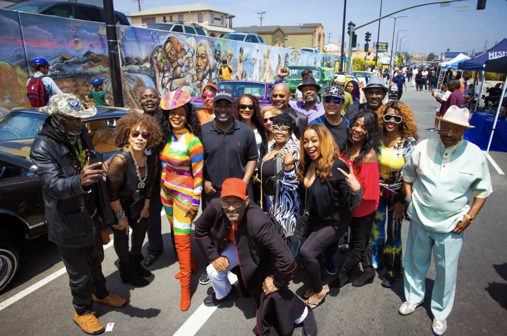
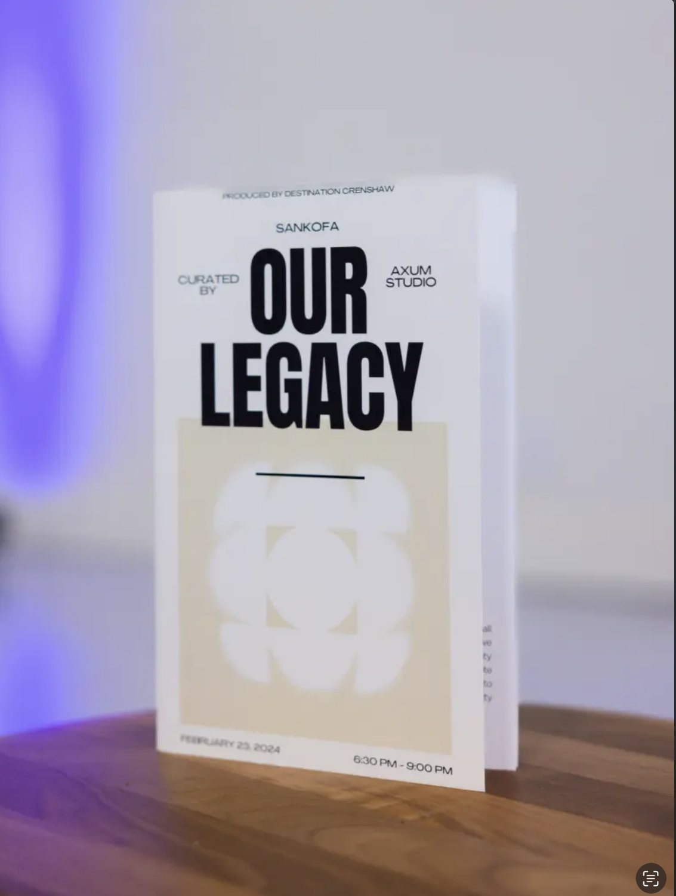
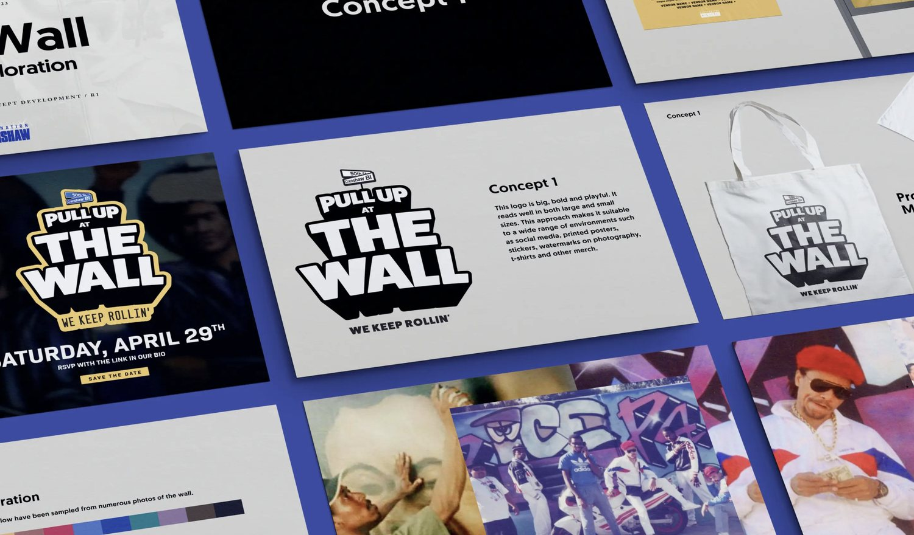
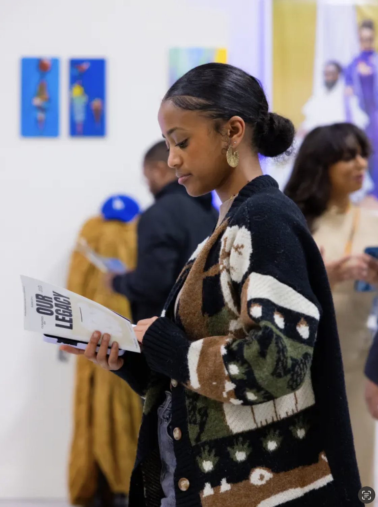
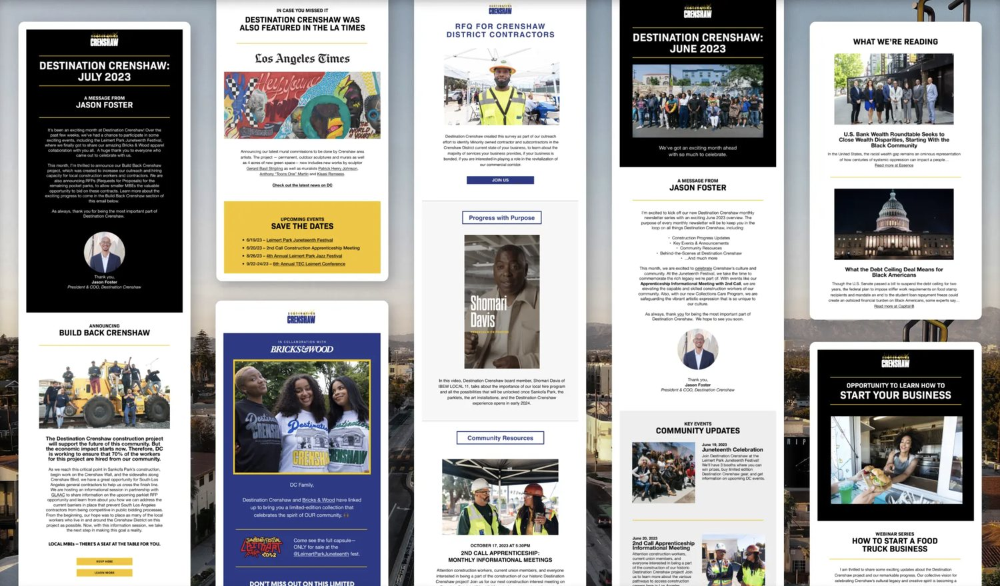
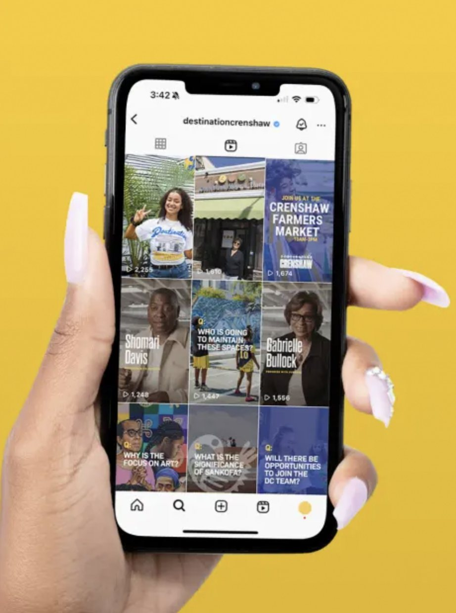
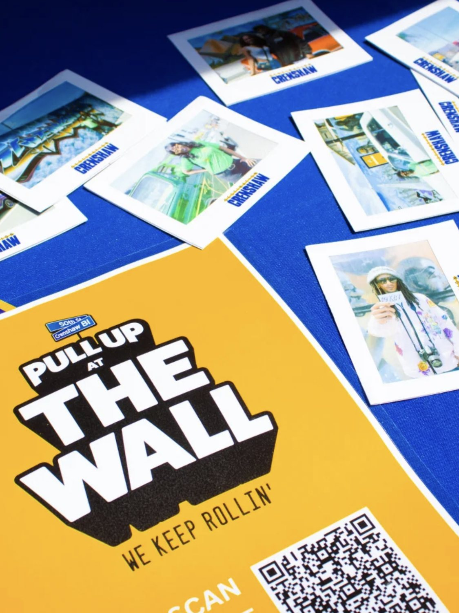
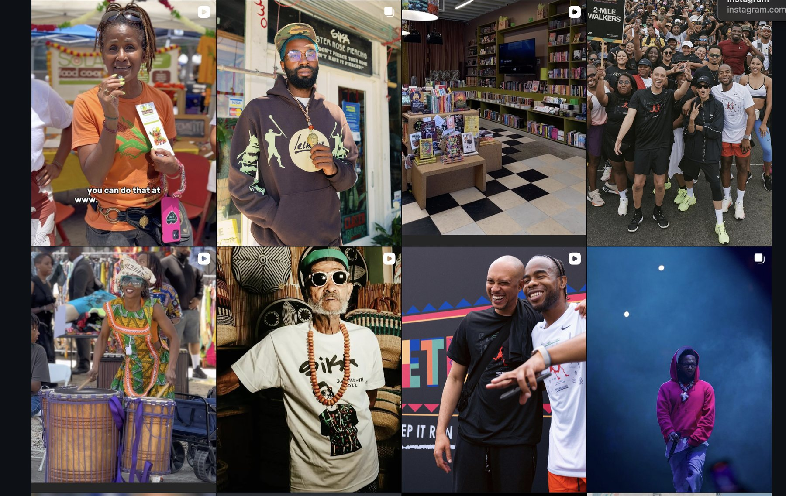

Destination Crenshaw
Destination Crenshaw is an open-air museum celebrating Black Los Angeles — 1.3 miles of art, architecture, and community along Crenshaw Boulevard. At SKY, I was the project manager and account lead on the engagement through launch season — driving brand development and messaging, running timelines and deliverables, and coordinating with the client’s PR team and the office of Councilmember Marqueece Harris-Dawson. On a team of four, I also executed wherever needed: designing simple assets myself, supporting our designer on the larger builds, producing shoots, writing the copy (no AI, all pen), and running the day-to-day of the brand’s social presence.
My role: project management, brand development, and account management — with hands-on execution across design, production, and copy.
- Agency
- SKY
- Role
- Project manager & account lead
- Client
- Destination Crenshaw ↗
- Location
- Los Angeles
- Case study
- On SKY’s site ↗
Selected work
A few of the pieces I produced, designed, or shipped along the way.
- Community shoot — produced on locationProduction ↗
- From the same shoot — cover and captions by SKYProduction · Design ↗
- Produced with Councilmember Harris-Dawson’s officeProduction ↗
- Asset built from scratchDesign ↗
- Music-video cutdown for socialsEdit ↗
- Social assetDesign ↗
- Program pamphletDesign ↗
- PR coordination — asset push with the comms teamPR ↗
- Launch film — creative direction by SKYShoot support ↗
The work







The feed
A running portrait of the neighborhood — shot, designed, captioned, and posted week after week.
